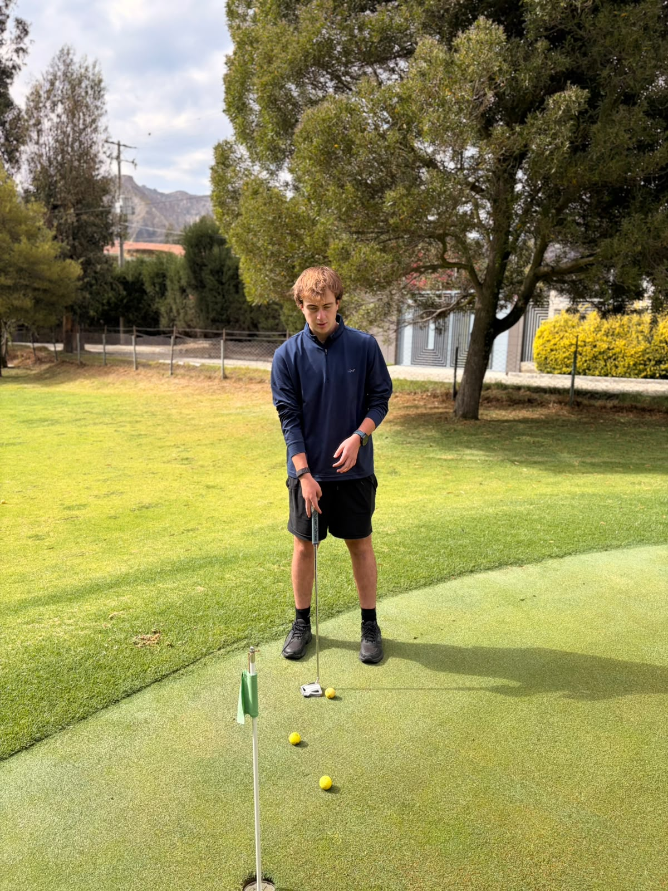
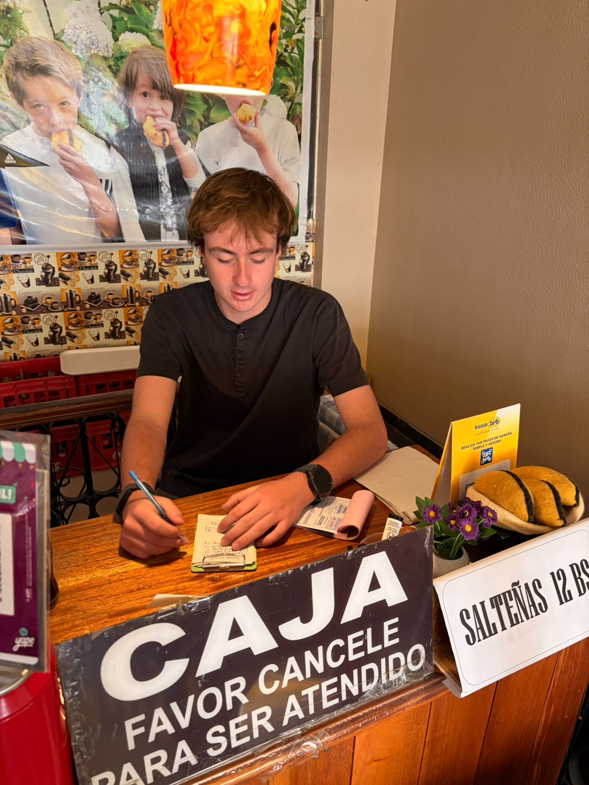
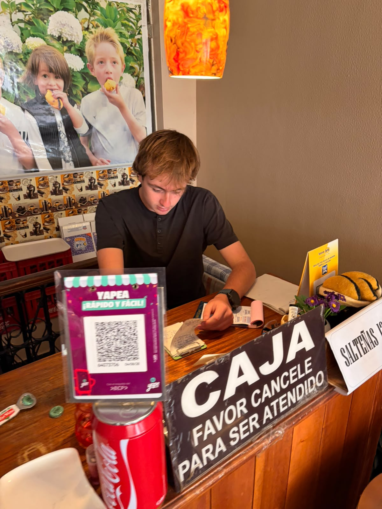
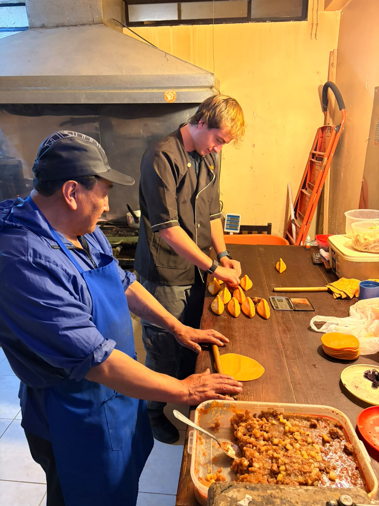

01 · Athletics & Leadership
Earn Your Progress. Lead by Example.
Talent gets you started, but you have to work hard to actually get anywhere. Soccer has been a huge part of my life, and nothing was ever handed to me.
- On the Field: I worked my way up from the 4th Division to Primera A (Bolivia’s 2nd Division). I won two U17 state championships, one U19 title, and two Friendship Games championships with my school team.
- Leadership: Being varsity captain taught me that leadership isn’t about shouting. It’s about being someone your team can rely on, setting a good example, and owning your mistakes.
- Other Sports: Playing golf and basketball taught me to stay composed under pressure, adapt when things don’t go as planned, and focus on my next move instead of dwelling on my last mistake.

02 · Service & Community
Recognize a Need. Take Initiative.
If you get good opportunities, the best thing you can do is use them to help someone else. I try to make sure my volunteer time actually makes a difference.
- Teaching & Coaching: I taught basic English to local golf caddies so they could speak better with visitors. I also coached sports for 10 kids and taught older adults how to use smartphones to stay in touch with family.
- Fundraising: Through Operation Smile, I helped raise over $7,000 with the Kilómetros por Sonrisas 5K, which paid for surgeries for 15 kids.
- Giving Back: I volunteered with the Special Olympics and helped out with family events for A Day in the Park.
03 · Entrepreneurship & Work
Solve Problems. Turn Ideas into Action.
Some of my favorite lessons didn’t happen in a classroom. They happened when I had actual responsibilities and my choices mattered.
- Hands-on Experience: Working in sales, customer service, and running a business project showed me how ideas turn into real products and how daily choices affect a business.
- Figuring Things Out: Real-world problems don’t come with an instruction manual. I learned to ask questions, switch up my plan, and solve problems on my own instead of waiting for directions.
- My Goal: I don’t just want to memorize stuff from a textbook. I want to actually understand it, use it, and make cool things happen.


04 · Independence & Life Skills
Take Ownership. Build Self-Reliance.
Being independent is about knowing how to handle your business and fix things when something goes wrong.
- Practical Skills: I’ve been teaching myself everyday skills like cooking, gardening, basic home repairs, and wiring.
- Problem-Solving: Doing basic chores teaches you how to troubleshoot, use what you have, and take care of yourself safely.
- Getting Ready: Picking up these habits is helping me get ready to live on my own, adapt to college, and pull my own weight.

More Moments
Photos & Videos
Resume
Fabrizio Saunero
Mallasilla, La Paz, Bolivia · fabrizio.saunero@acslp.org · +591 7778 4807
Download Resume (.docx)Education
American Cooperative School (ACS), La Paz, Bolivia Aug 2023 – Jun 2027 (Expected)
- Diploma: U.S. and Bolivian High School Diploma
- Cumulative Unweighted GPA: 2.90 | Award: American Citizenship Award
- Coursework: AP Seminar, AP Research, AP World History, AP Microeconomics, AP Spanish Language, AP Spanish Literature
Forman School Summer Program, Connecticut, USA Jul 2025
- Completed a four-week academic program alongside students from diverse backgrounds, strengthening independence, communication, and cultural awareness while experiencing new teaching methods and American culture.
Athletics & Activities
Club de Tenis La Paz – Soccer | Starting Player 2017 – Present
- Progressed through the youth divisions to the senior team, training about 25 hours per week; earned promotion from the 4th Division to Primera A (2nd Division).
- Honors: 2× La Paz State Champion (U17); 1× La Paz State Champion (U19); promotion to Primera A
ACS Varsity Soccer | Team Captain Aug 2023 – Present
- Varsity starter since 9th grade and a key offensive and defensive contributor in local and international competitions.
- Honors: 2× Friendship Games Champion; 1× Cougar Cup Champion; 2× Cougar Cup Runner-up; Copa Nissan Runner-up; UPB Tournament Runner-up
ACS Varsity Basketball | Player Aug 2023 – Present
- Regular rotation player and key defensive contributor in regional school tournaments.
- Honors: 2× Cougar Cup Champion; Friendship Games Runner-up; Friendship Games Third Place
Club de Tenis La Paz – Academy Basketball | U15 & U17 Aug 2023 – Present
- Competed in the U15 and U17 divisions against strong regional competition, building teamwork, discipline, and versatility.
Club de Golf La Paz | Team Member Aug 2023 – Present
- Competed in junior golf tournaments; Honors: Club Tournament Champion (9th grade).
UPSL Soccer Competition | Team Member Jun 2026 – Present
- Compete in UPSL leagues against high-level opponents, gaining international experience and adaptability.
Team Tequilas, Club de Tenis La Paz | Team Captain Sep 2024 – Present
- Captain of a multi-age soccer team; won 1st place after advancing through multiple rounds of competition.
Leadership & Community Service
English Classes for Golf Teachers | Founder Jul 2025 – Present
- Founded and teach a basic English program that helps golf instructors communicate with international club members.
Operation Smile | Member & Volunteer 2024 – Present
- Fundraise for children receiving cleft lip and palate surgeries; supported charity races, ticket sales, and the 5K “Kilómetros por Sonrisas,” which raised up to $7,000 for 15 children.
A Day in the Park | Volunteer 2024 – Present
- Join monthly gatherings that provide quality time and support to children and families affected by poverty, neglect, and substance abuse.
Special Olympics | Volunteer Oct 2026
- Participated in volunteer activities supporting Special Olympics athletes.
Youth Sports Coach | Community Volunteer Apr 2025
- Coached about 10 young children in soccer, basketball, and other sports, emphasizing teamwork, discipline, sportsmanship, confidence, and healthy lifestyles.
Digital Literacy Instructor | Community Volunteer Mar 2025
- Taught older adults to use computers, smartphones, email, and social media, including internet safety and online communication.
Work Experience
Family Juice Business | Assistant Jan 2026 – Present
- Work alongside my father producing fresh lemon juices and bottled beverages: preparing ingredients, sanitizing equipment, bottling, labeling, managing inventory, packaging orders, and assisting customers.
- Helped introduce a special plant from another country used in the lemonades.
Super Salteñas | Shop Employee Dec 2024 – Present
- Serve 30+ customers daily: take orders, handle cash and electronic payments, support food preparation, restock inventory, and resolve customer concerns professionally.
Compañía Cervecera Boliviana | Brewery Production Worker Sep 2025 – Dec 2025
- Supported daily production and packaging in a fast-paced facility, including beverage preparation, bottling, labeling, quality control, and safety procedures; contributed to thousands of units produced to strict quality standards.
Beverage Production & Sales | Production & Sales Assistant Sep 2025 – Dec 2025
- Prepared beverages for commercial distribution, promoted products to customers, maintained displays, and answered questions, building sales, communication, and leadership skills.
Textilon | Intern Jun 2025
- Completed an internship at one of the largest textile companies in La Paz, assisting with inventory, administrative tasks, logistics, distribution, and customer service while learning workplace professionalism and teamwork.
School Entrepreneurship Project – Cookie Business | Co-Founder Mar 2025 – May 2025
- Co-founded a student-run cookie business covering baking, packaging, marketing, pricing, sales, and customer service; tracked costs and revenue and generated a profit of more than Bs. 300.
Skills & Languages
Languages
- Spanish (Fluent), English (Fluent), Italian (Basic)
Skills
- Cooking and food safety, kitchen organization, basic electrical work and maintenance, mechanical repairs, gardening and landscaping, household maintenance, inventory management, customer service
Closing Statement
Ready for What’s Next
Everything I’ve done so far has taught me discipline, responsibility, and how to work with others.
I’m really excited for college. I can’t wait to take tough classes, join campus projects, and learn from people who see the world differently than I do. I know I still have a lot to learn and a lot to prove, but I’m ready to work hard and make this next chapter count.
The next chapter is mine to build.